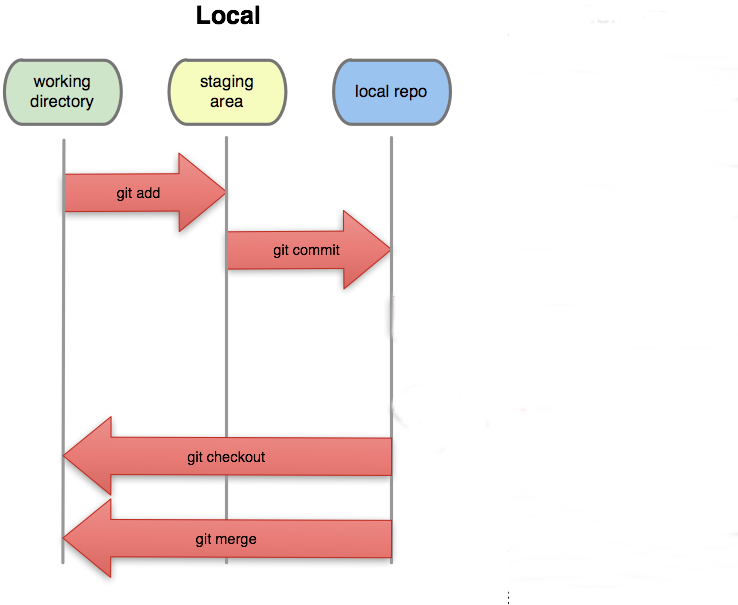
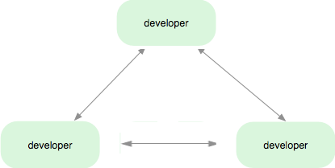
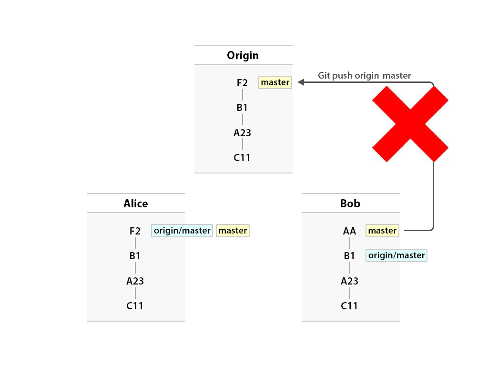
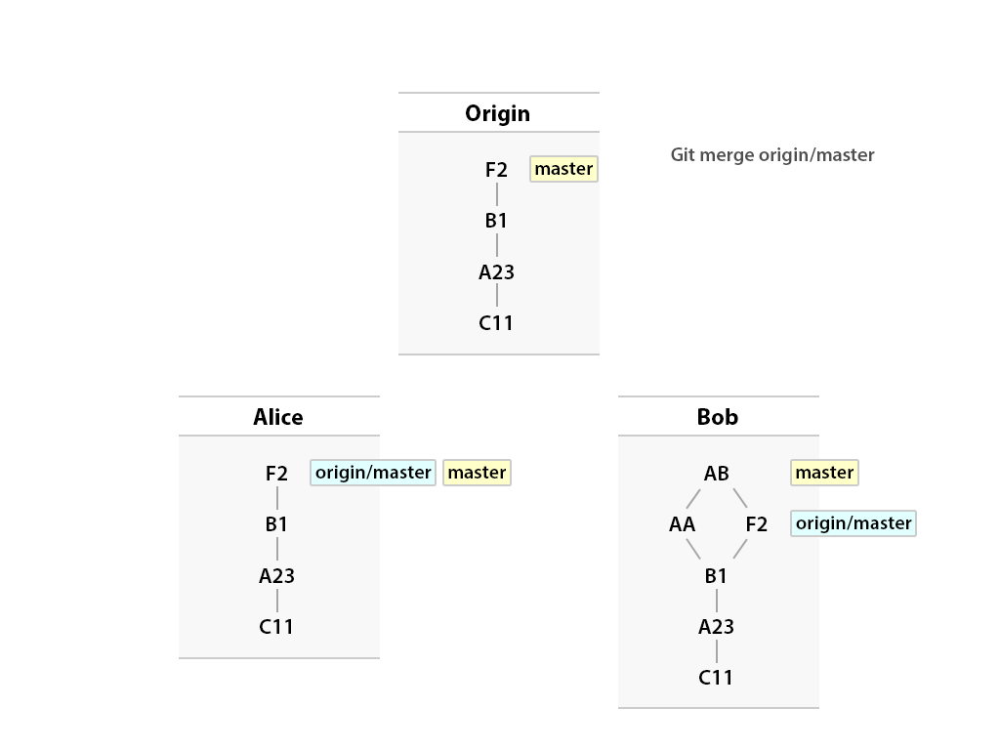
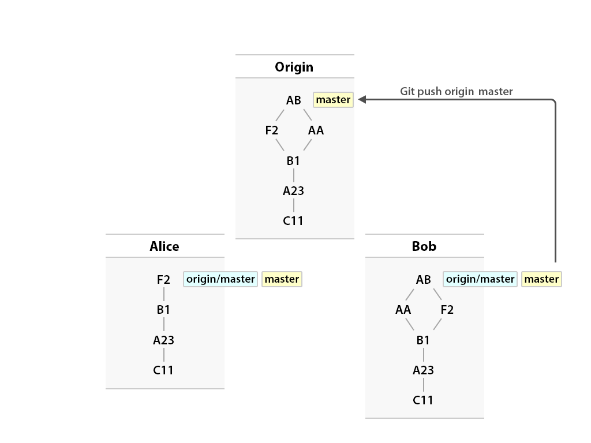

Catalyst
Git
Revision control for humans
### Change Logs - Annotate
Show who made changes to what line
```bash
$ git annotate silly-script.pl
b61863c8 (Andrew R. 2008-05-09 17:01:41 +1200 1) #!/usr/bin/perl -w
b61863c8 (Andrew R. 2008-05-09 17:01:41 +1200 2)
b61863c8 (Andrew R. 2008-05-09 17:01:41 +1200 3) print "silly script\n";
9c08faf4 (Bad Coder 2008-05-09 17:18:18 +1200 4) I'm in ur code, breaking ur stuff.
```
Who is this Bad Coder fella?
Better remembered as ```git blame```
```bash
$ git blame silly-script.pl
b61863c8 (Andrew R. 2008-05-09 17:01:41 +1200 1) #!/usr/bin/perl -w
b61863c8 (Andrew R. 2008-05-09 17:01:41 +1200 2)
b61863c8 (Andrew R. 2008-05-09 17:01:41 +1200 3) print "silly script\n";
9c08faf4 (Bad Coder 2008-05-09 17:18:18 +1200 4) I'm in ur code, breaking ur stuff.
```
Commits are....
A quick recap
Sharing your changes with others

### Creating Repositories - Revisited
We already know how to create a new repositry
```bash
$ git init
Initialized empty Git repository in .git/
```
...but normally, you want to join in with an existing project
### Remote repositories - URLs
```bash
# Clone an existing repository via HTTP
$ git clone https://github.com/catalyst-training/git-basic
```
```bash
# Clone an existing repository via SSH
$ git clone ssh://git.catalyst.net.nz/git/public/git.git
```
```bash
# Clone an existing local repository (this is only slightly mad)
$ git clone test test2
```
### Remote branches
Remote branches are references (pointers) to the state of
branches in your remote repositories.
They're local branches
that you can't move; they're moved automatically for you
whenever you do any network communication.
Remote branches act
as bookmarks to remind you where the branches on your remote
repositories were the last time you connected to them.
### Ways to work with git (1)
#### Corporate Workflow
You will probably use this

### Ways to work with git (2)
#### Integration manager Workflow
A quick diversion: http://www.github.com

### Ways to work with git (3)
#### Dictator Workflow
This is how the Linux kernel is managed

### Ways to work with git (4)
#### Peer to peer Workflow

#### Once upon a time....
Alice and Bob wanted to do some work

So they both made some changes....

Alice pushes her changes...

But Bob has a problem...

Now Bob needs to fetch the changes from Alice

and merge them with his work

They all lived happily ever after...

### Loose ends...
#### git reset
```bash
# You can also change to a different commit before doing
# the reset
$ git reset --hard HEAD^^
HEAD is now at a51452d rewrite the 'begin' function
```
```bash
# This changes your commit, but leaves your files and index untouched
# - changes that you have 'added' are still ready to commit
# - changes to files are still ready to add
$ git reset --soft HEAD^^
```
```bash
# This changes your commit and the index, but leaves your files untouched
# - changes to files are now ready to add, even if you had already added them
$ git reset --mixed HEAD^^
```
### Loose ends...
#### git stash (hide)
You can hide your changes away for later use
```bash
$ git status
# On branch master
#
# modified: super-script.pl
$ git stash
Saved working directory and index state WIP on master: 5cc4a26 added a file
```
```bash
$ git status
# On branch master
nothing to commit (working directory clean)
```
### The End
#### Questions?
The official Git site-> http://git-scm.com/about
Data Assurance-> http://git-scm.com/about/info-assurance
Cheat sheet-> http://web.archive.org/web/20090419122050/swxruby.org/git-cheat-sheet.pdf
Github-> http://github.com
---------------------
The presentation content is licensed under a Creative Commons Attribution 3.0 License. (http://creativecommons.org/licenses/by/3.0)The presentation display is licensed seperately by Hakim El Hattab / @hakimel
### Problem 2
#### Solution
```bash
# Clone the repository
$ cd /tmp
$ git clone https://github.com/catalyst-training/example2.git
$ cd /tmp/example2
```
```bash
# Work out what we want to do
$ git log --oneline
5c90449 Remove the README file
3bec061 Some more stuff
3114205 Oooh, this smells a bit funny...
510043a Another list - snakes
6a624b3 Add a list of lists
```
```bash
# Rewrite the past
$ git rebase --interactive 510043a
```
### Problem 2b
#### Solution
```bash
$ git log --oneline
```
```bash
# This will be more complex, from within this command you'll need to:
# $ echo '* Highlander II' >> lists/movies.txt
# $ git add lists/movies.txt
# $ git commit --amend
# $ git rebase --continue
$ git rebase --interactive b9fb9c8
```
### Problem 5
#### Solution
```bash
# Amend the commit and force push
$ echo '' > password.txt
$ git commit -am "Nothing to see here..."
$ git push -f origin master
```
```bash
# Rewind and force push
$ git reset --hard HEAD^
$ git push -f origin master
```
```bash
# Delete the remote branch and push a new one
$ git push origin :master
$ git reset --hard HEAD^
$ git push origin master
```
### Problem 6
#### Solution
```bash
# Too hard, I'll try again some other time
$ git merge --abort
```
### Problem 6b
#### Use tools to try to resolve a conflict
Go to your 'example2' project, and try to merge in the 'kittens'
branch...
```bash
# Create a conflict
$ cd /tmp/example2
$ git merge origin/kittens
$ git status
```
There are conflicts, but I think you can handle them!
### Problem 7
#### Throw away your changes
What if you make some changes, and you want to get back to safety?
```bash
$ cd /tmp/example2
$ echo 'A dragon will fix it' > lists/links.txt
$ rm lists/movies.txt
$ git status
```